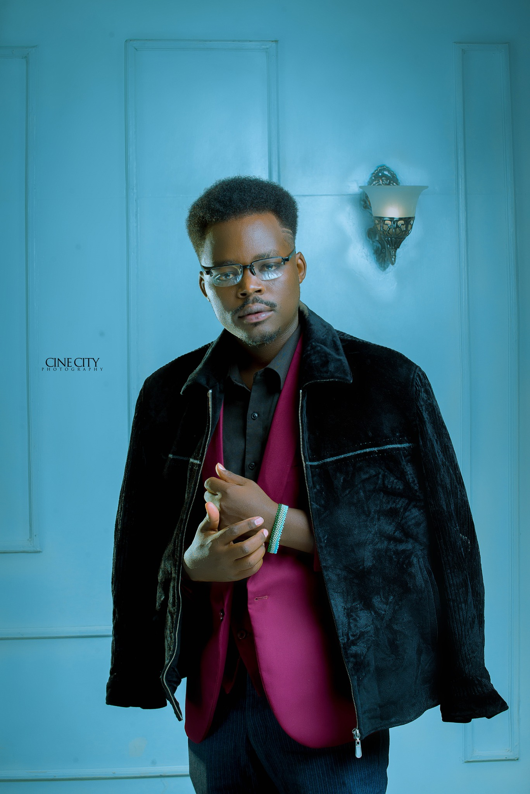

About me
John Robert is a self-made CREATIVE who was born in AFRICA in an eastern country called RWANDA. Growing up in a foreign country(MALAWI) where Education for refugees is only provided until high school, he had to find ways to survive after graduating from high school. Hours turned into days, days into months without a real-life plan with his life without a job and no potential of finding one.
THE LEADERSHIP GUY “Don’t wait for inspiration. It comes while working." (ECONOMY P,2019, p.1). Photography happened and it became a hobby that turned into business as he was just learning photography in order not to be idle at that time. Summer of 2019, his carrier was on top when he worked with The biggest bank in Malawi, N.B, Airtel Malawi, and participated in WORLD YOUTH SKILS DAY PHOTO COMPETITION as a finalist and opened a photo studio before getting a big chance to pursue his studies in CANADA where he is studying everything related to his all-time hobby.